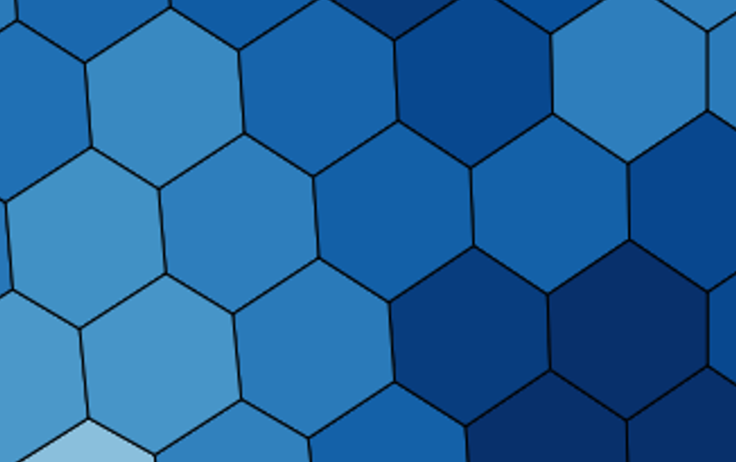
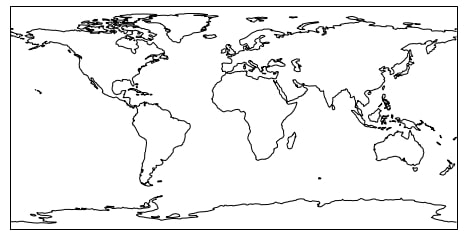
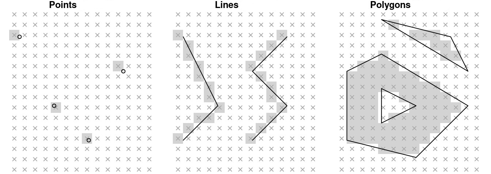
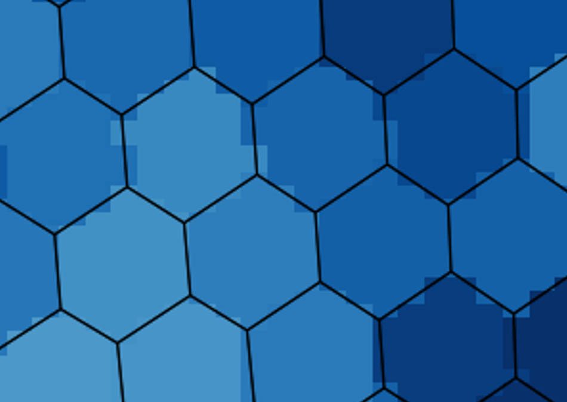

Rendering Techniques
In this section, you’ll learn:
Rendering methods that can be used for unstructured grids visualization.
Prerequisites
Concepts |
Importance |
Notes |
|---|---|---|
Geometry |
Necessary |
Time to learn: 10 minutes
Since Unstructured Grids require significantly more overhead to represent compared to Structured grids, the choice of rendering technique plays an important role in obtaining high-resolution, accurate, and scalable visualizations.
This notebook introduces relevant concepts and techniques that will be mentioned and used throughout this Cookbook.
Vector (Shape) Geometries
The nodes (vertices), edges, and faces (cells) that make up an Unstructured Grid can each be converted into a geometric shape for visualization. These geometric shapes can often be referred to as vector graphics, since each geometry is mathematically represented when rendering.
For example, in the “Plotting with UXarray” chapter, we will showcase how we can convert the faces in our Unstructured Grid into Polygons.
When constructing unstructured grids visualization, we can render each face directly onto the screen.
Rendering each face as a polygon will lead to visuals that look like this, which are high-quality since they represent the exact geometry of each face.

{kind=link}
Another example of Vector Geometries is encountered when adding features to a visualization, such as Contents or Borders. The geometries of these features are drawn onto our screen.

{kind=link}
Shapely Example
One Python package which is used for representing and manipulating geometries is Shapely.
Shapely can be paired with SpatialPandas and other packages to represent unstructured grid elements (nodes, edges, faces) as geometries for visualization.
The following code snippets are basic examples of how these elements can be represented as geometries.
import shapely as sp
A node is represented as a pair of longitude and latitude coordinates
sp.Point([0.0, 0.0])

An edge is represented as a pair of nodes.
sp.LineString([[0.0, 0.0], [180, -90]])
A face is represented as a counter-clockwise set of nodes, with the first and final nodes in the set being equivalent (form a closed face)
sp.Polygon([[100, 40], [100, 50], [90, 50], [90, 40], [100, 40]])
Rasterization
While there is definitely merit in rendering each geometric shape directly, this operation is computationally expensive for large datasets.
Rasterization is a technique in computer graphics that converts vector (a.k.a geometric shapes) graphics into a raster image, which can be thought of as a regularly-sampled array of pixel values used for rendering.
The figure below shows a simplified example of how rasterization “approximates” the geometry of different elements.

{kind=link}
For unstructured grids, rasterization looks something like the following.

{kind=link}
The black edges outline the expected geometry of each face (a.k.a polygon).
We can observe the jaggedness in the shading, which is the product of rasterization approximating each face.
Note:
The selection between vector graphics and rasterization needs to be made taking into account several factors such as how large is the dataset (i.e. how fine-resolution the data is), what data fidelity with the visualization is desired, what performance is expected, etc.
See also:
A more comprehensive showcase of rasterization can be found here
What is next?
Up next is the new chapter that will provide an Introduction to UXarray.